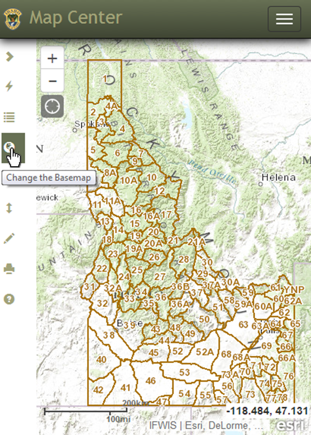

TOOLBAR: Toolbar Overview
When the screen size decreases, the toolbar may collapse. When you hover over an icon, it will give you the tool name. To activate the tool, simply click the icon. You can also expand the toolbar, by clicking the icon.

Created with the Personal Edition of HelpNDoc: Full-featured EPub generator